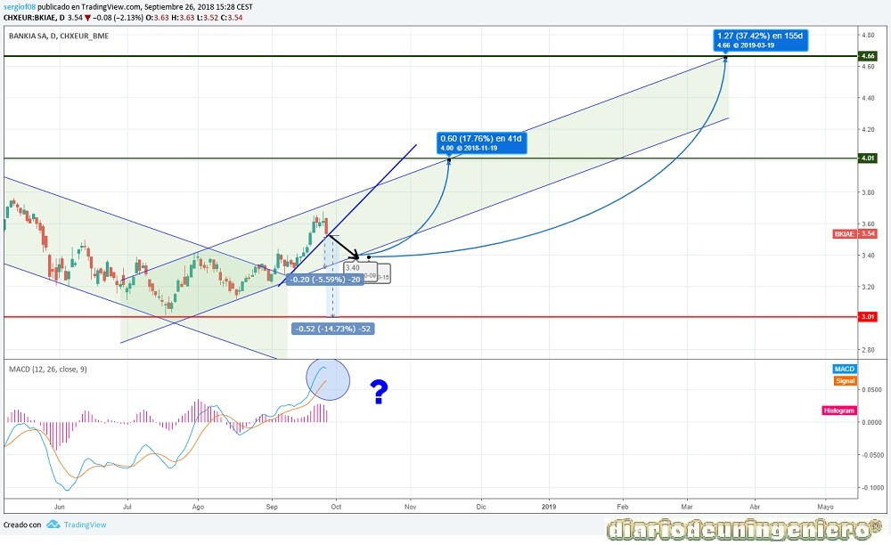

Recordemos los orígenes de Bankia, la todapoderosa caja de ahorros Cajamadrid. En 2012 saldría a bolsa de la mano de Rodrigo Rato y al poco tiempo se conocería la verdadera situación financiera de la entidad con un agujero muy grande.
Este agujero era consecuencia de la crisis inmobiliaria. Bankia como todas las cajas de ahorros españolas y los bancos en menor medida daba hipotecas como si diera caramelos a niños hambrientos.
No se ocuparon de contemplar los riesgos o un cambio en la economía mundial. Muchos si lo vieron pero haciendo honor a la visión cortoplacista de los españoles "yo me embolso la pasta y el marrón ya lo cargará otro".
Ese fue el caso de la antigua dirección pero no preverían que el daño iba a ser mayúsculo y que el banco estaría al borde de la quiebra teniendo que ser rescatado por el estado con cerca de 40.000 millones de euros.
Al ser un banco la deuda y todos los valores que conllevan no son relevantes, ya que el banco es el que presta y su deuda suele estar referenciada a otros bancos o entidades así como ellos son acreedores de muchas empresas y personas físicas.
Estos datos suelen ser internos del banco y no se pueden presentar ya que están variando constantemente.
A continuación presento los datos de fundamentales que me parecen más importantes:
| ### | 2014 | 2015 | 2016 | 2017 | 2018 |
|---|---|---|---|---|---|
| Benefit/share value | |||||
| Capitalización(M) | 14.258 | 12.369 | 11.183 | 11.479 | 11.158 |
| PER | - | 10,01 | 12,87 | 13,75 | 13,43 |
| Beneficio Neto (M) | 1.040 | 804 | 505 | 845 | |
| Dividendo (%) | 3.14% | 3,06% | 3,47% | 3,89% | |
De los datos fundamentales podemos ver la subida muy progresiva del EBDITA y la mejora de los datos así como un PER menor por su mejor cotización. Además desde hace 3 años da un dividendo bastante bueno del 3%, mientras que otros bancos como el Santander no lo dan. Además si lo comparamos con bancos similares del IBEX el potencial de subida es mucho mayor y por otra parte estos bancos poderosos como el BBVA y el Santander estarían planeando a medio plazo comprar Bankia. Esta supuesta OPA que se podría dar una vez que acumule bastantes beneficios producidos por la subida de tipos que se espera en 2020, podría conducir al valor a triplicar su precio en bolsa. Echando cuentas, Bankia podría ser comprada entre 2020 y 2022 pero si crece mucho quizás ya no sea tan atractiva por lo que habría que verlo.
Otro factor importante es la compra de BMN (Banca Mare Nostrum) en 2017 que hizo que Bankia se extendiera todavía más por territorio nacional. Las sinergias producidas por esta compra deberían de ser de unos 100 millones anuales. Esta compra debería empezar a notarse en 2019 una vez asentada en los resultados.
Una vez transcurrido el tiempo tras la salida a bolsa Bankia se asentaría en torno al precio de 1 euro y el año siguiente se realizaría un macroampliación de capital. Otra vez más se especularía con el valor y además se realizaría un contrasplit de 100 a 1 para darle el valor de euro, en concreto 1,36€.
Esto sería novedoso ya que en el IBEX35 nunca habría habido un valor que cotizará tan bajo. A partir de ahi empezaría la espiral bajista que terminaría ya a mediados de 2016 justo antes de las elecciones americanas.
Decir que este valor va correlado muy bien con el IBEX35 y en cuanto el IBEX dejo los 7.800 puntos y empezó a escalar Bankia iría de la mano.
Una vez empezando a subir y tras las buenas noticias de los resultados con el nuevo director de la entidad, Goirigolzarri empezaría un ascenso meteórico pasando de mínimos en 0.52 a doblar su valor en 6 meses. Esto se puede observar en la siguiente figura, de 2.1€ (0.55) a 4.6€ (1.16) en Mayo de 2017.
El máximo de la subida coincide con la victoria de Macron en las elecciones de Francia. A partir de ahí el IBEX empezaría una corrección severa aumentada por el fallido golpe de estado en Cataluña.
Los datos de la deuda no cuento con ellos pero han ido reduciéndose poco a poco. Lo más importante del valor es que el 57% de sus acciones las posee el estado y este hará lo que tenga que hacer para venderlas con plusvalías.
En 2015 se fijó una cifra en torno a os 1.5€, 6€ al cambio actual para empezar a vender. Eso supondría a precios de hoy una revalorización del doble de los precios actuales.
Si analizamos el valor a corto plazo se puede observar que ahora mismo esta en comenzando un nuevo canal alcista y con todas las perspectivas de que no lo va a perder. Si observamos próximamente se cruzaran las líneas de nuevo, lo que indicara una pequeña corrección. Esta será la oportunidad para ejecutar la compra. Si la ajustamos en 3.6€ y fijamos como stop la superresistencia de 4€ podríamos tener unas plusvalías de un 18%, pero si seguimos hasta los máximos anteriores que en menos de dos años se rebasaran podrían ascender las plusvalías a cerca de un 40%. Si además vendemos en 4€ y volvemos a comprar por debajo en la base del canal podríamos sacar un 10% adicional, ya que el ancho del canal es aproximadamente eso.
En caso de perder los 3€ habría que pensar en salir del valor y a analizar las posibles causas de esa caída. Una vez superado los 4€ sería aconsejable ir poniendo stops por debajo del 5% de donde este en cada momento.

© 2016 - All Rights Reserved - Diseñada por Sergio López Martínez
![[Valid RSS]](https://www.feedvalidator.org/images/valid-rss-rogers.png "Validate my RSS feed")